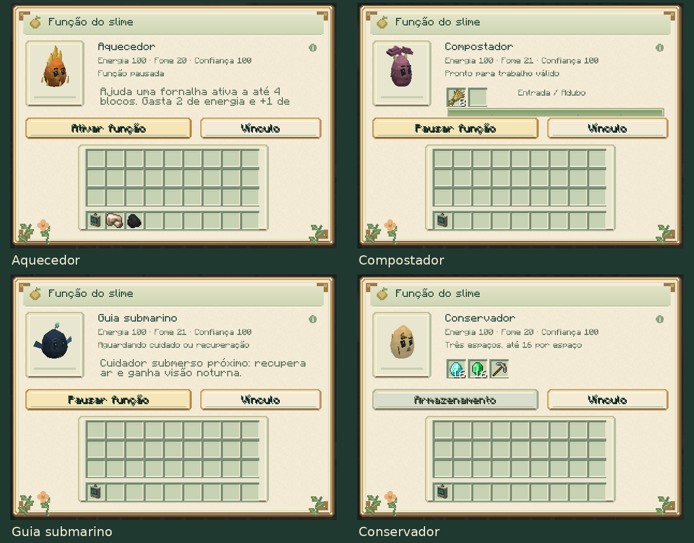
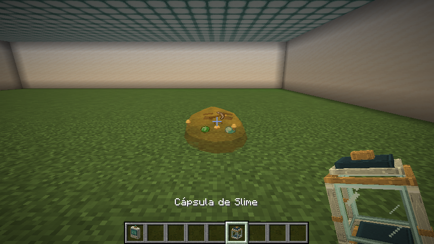

Funções individuais dos slimes
Guia do mod · Vínculo e treinamento

O painel oferece 19 funções individuais. Fogo, Fúngico, Abyssal e Âmbar estão detalhados nesta página. Para Ferro, Comum, Água, Luminoso, Almas, End, Void, Cáustico, Lunar, Colmeia e Aurora, consulte produção, transporte e auras.
Elétrico, Cristal, Cristal Energizado e Vidro estão no guia de circuitos, sonar e vitrine.
Acessar a função
Agache e use o analisador genético no seu slime, depois pressione Função no painel de vínculo. O acesso continua restrito ao cuidador próximo, com visão livre e permissão de construção. As funções começam desligadas nos indivíduos novos e nos saves antigos.
Fogo, Fúngico e Abyssal precisam ser adultos e estar calmos, com confiança de pelo menos 40, energia de pelo menos 30, fome de no máximo 60 e conforto de pelo menos 40. Ative a função e mantenha os cuidados. Dano, combate, reprodução, laços, passageiros e necessidades inadequadas podem interromper o trabalho. O ícone de informação explica os custos ao passar o mouse.
Fogo: aquecedor
Coloque o slime a até quatro blocos de uma fornalha, alto-forno ou defumador, com visão livre até o bloco, e use a ordem Livre ou Esperar. O cuidador precisa estar online na mesma dimensão e ter permissão para alterar o local.
A cada segundo, um slime disponível acrescenta até 20 ticks de preparo a um processamento que já tenha aceitado combustível, receita e espaço na saída. Cada pulso custa 2 de energia e acrescenta 1 de fome. A recuperação de 20 ticks é do ajudante: várias fornalhas não podem reutilizá-lo simultaneamente, e vários slimes não multiplicam os pulsos da mesma fornalha naquele segundo.
A fornalha conserva combustível, ingredientes, resultados, receitas e XP
normais. O slime não inicia uma fornalha sem combustível nem gasta energia
quando a receita ou a saída estão bloqueadas. O último tick e a entrega do
resultado continuam sob responsabilidade da fornalha. A ação respeita
mobGriefing e o evento de permissão de interferência de entidades do NeoForge.
Fúngico: compostador
No painel de função, coloque oito itens compostáveis iguais no primeiro espaço. São aceitos os itens da compostagem do Minecraft, como sementes, folhas, plantas e alimentos vegetais. O segundo espaço é a saída.
Após 200 ticks de trabalho carregado — dez segundos a 20 ticks/s — o slime consome oito unidades e produz uma farinha de osso, usada como adubo. A conclusão custa 6 de energia e acrescenta 3 de fome. O processamento pode acompanhar o slime durante uma ordem Seguir.
Os espaços comportam até 16 itens. Sem oito entradas válidas ou com a saída cheia, o ciclo reinicia sem cobrar materiais ou energia. Pausar a função ou perder condições de cuidado conserva o progresso, que também fica salvo ao capturar ou descarregar o slime. É possível retirar o adubo normalmente, inclusive com Shift. Não é possível inserir itens no espaço de saída.
Abyssal: guia submarino
Ative a função e mantenha o cuidador e o slime com os olhos submersos, a até seis blocos, com visão livre entre eles. O guia funciona também enquanto segue o cuidador com uma ordem aprendida.
Quando necessário, uma ação recupera até 60 pontos de ar e concede ou renova 15 segundos de visão noturna. Isso permite enxergar o caminho subaquático sem colocar fontes de luz no mundo. O auxílio atende somente o próprio cuidador.
Cada ação custa 2 de energia e acrescenta 1 de fome, com 40 ticks de recuperação: dois segundos a 20 ticks/s. Ar completo e visão noturna ainda recente não gastam recursos. Efeitos de visão noturna existentes com duração maior são preservados. Ao sair da água, o efeito já concedido termina pelo seu tempo normal; novos auxílios exigem que ambos continuem submersos.
Âmbar: conservador
O painel oferece três compartimentos, cada um com até 16 itens, respeitando o limite normal do objeto. Uma ferramenta continua ocupando um espaço com uma unidade. A confiança mínima para novos depósitos é 40.
Os objetos guardados aparecem dentro do corpo do slime. Quando está vazio, ele conserva as inclusões decorativas de graveto, pedra e picareta. O armazenamento não consome energia e não exige ativar um ciclo de trabalho.
Cápsulas, bolsas, caixas de shulker e itens com inventários incorporados não são aceitos. Transferências com Shift preservam o excedente no inventário do jogador.

Persistência, retirada e configuração
Os pertences, a preferência de trabalho, a recuperação e o progresso de compostagem acompanham o indivíduo no save e na cápsula. A captura não derruba os itens; eles voltam com o mesmo slime na soltura. A morte derruba os pertences uma vez. Filhotes começam com inventário vazio e sem função ativada.
Metamorfoses preservam os pertences. Se a nova espécie não possuir uma função, o botão permanece disponível enquanto houver itens, permitindo retirá-los. O menu anterior fecha ao mudar de espécie; novos depósitos seguem as regras da espécie atual.
O servidor pode desligar companions.specializations nas
configurações. Isso pausa funções e novos depósitos.
O cuidador continua podendo retirar seus itens ou cancelar a ativação armazenada,
inclusive com confiança abaixo de 40. As recuperações avançam apenas enquanto
o indivíduo está carregado. Não há carregamento de chunks para executar funções.